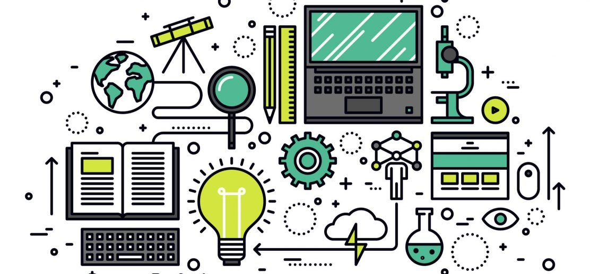
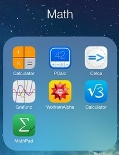

Technology provides dynamic opportunities for instruction in math and STEM classrooms. We can enhance the learning process and make concepts come alive through engaging and interactive media. We may also offer additional supports to address the needs of all learners and create customized learning experiences. Here are some important ways that students can benefit when we incorporate technology with our math and STEM lesson instruction.
Multimedia brings learning to life! We can bring videos, animations, interesting movies and other media into the learning process to help our students develop skills and understandings. And it can help to motivate and excite our students about their learning!
Making math (or STEM subjects) visual goes beyond student engagement;
brain research indicates it to be integral to learning maths. Neuroscientists
at Stanford University are studying how the brain thinks mathematically and evidence shows
that visual pathways are involved even when working on symbolic number calculations.
According to Jo Boaler and the team at Stanford Graduate School of Education’s
youcubed,
representing all mathematical concepts visually, and including visual activities at
all grade levels, can greatly help students.
Technology provides additional opportunities for learners to see and interact with
mathematical concepts. Students can explore and make discoveries with games, simulations and digital tools.
One excellent platform for teachers and students is the web-based graphing
calculator, Desmos.
The Desmos classroom
activities page is a great starting point to engage students in
playing with and testing mathematical ideas and also sharing and collaborating.
And, the new addition to Texthelp’s STEM offering,
EquatIO mathspace, creates a digital whiteboard where
students and teachers can combine math equations and formulas with
Desmos graphs, geometrics shapes, manipulatives, and freehand drawings to
encourage visual problem solving.
Click the button to test if the word "addition " from the string that you did read before exist.
Click the button to print the word "addition" from the string that you read before if it is true.
Increased access to technology for STEM allows for a more customized learning experience. Because no two learners are exactly alike, technology can provide individual students with content and supports that are particularly helpful to their individual needs. Kids can view lessons, tutorials, screencasts, and other instructional media on their own device and at their own pace. So if one student is still confused on a topic, and another is ready for additional challenges, technology can enable each to take the appropriate next step.
A great example of how technology empowers learners is the phenomenon of Khan Academy Sal Khan did not intend to build a non-profit educational organization when he started posting the recordings of his math lessons on YouTube (as he delightfully explains in his TED Talk). He was only trying to help tutor his cousins from afar and didn’t see any reason to set the videos to Private mode. From the feedback from his cousins, and then from other people from all over the world who found his videos, he realized how valuable this medium was and the importance of being able to choose, rewind, and control the lessons.
The Khan Academy platform has emerged from his work, giving learners personalized learning experiences in a number of ways. For example, users can take quizzes to see what concepts they have mastered and what they need more practice with. Or students that learn better through written text can access transcripts that accompany the instructional videos. Providing the ability to direct and control learning pathways is a powerful reason to include technology in our own math instruction.
Integrating technology in the math classroom allows students to interact with people outside of the classroom to help broaden their understandings and perspectives about what they are studying.
The calculator has had a profound impact on the world, making computations quicker and
more exact. In the classroom, calculators have given many students the ability to learn
about and put complex formulas and concepts into practice more easily. Especially in
lower-grade mathematics courses, some instructors still don't allow their use to make
sure students truly understand mathematical concepts and learn problem-solving techniques.
But for many calculus and trigonometry courses in high school, for example, graphing
calculators are a requirement.

Calculators have even moved online and have a number of practical applications. Engineers continue to make advancements in calculator technology, and as they become more and more complex, the lines between personal computers and classic calculators may continue to blur. In your right there is a simple calculator that we created.